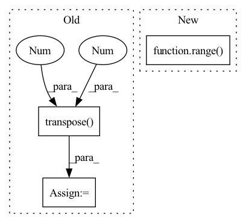

Pattern ID :3272
Before Change
// prepare input for decoder
src_flatten = srcs.flatten(2).transpose(1, 2) // [Batch, Patches, HiddenDim]
pos_embed_flatten = pos_embeds.flatten(2).transpose(1 , 2 ) // [Batch, Patches, HiddenDim]
bs, _, c = src_flatten.shape
query_embed, tgt = torch.split(query_embed, c, dim=1) // Tgt in contrast to detr not zeros, but learnableAfter Change
assert query_embed is not None
// prepare input for decoder
for idx in range( len(srcs)) :
srcs[idx] = srcs[idx].flatten(2).transpose(1, 2)
pos[idx] = pos[idx].flatten(2).transpose(1, 2)
In pattern: SUPERPATTERN
Frequency: 3
Non-data size: 3
Instances Fragment ID: 17196630
Project Name: bwittmann/transoar
Commit Name: b13e8b2db58100e624031db6b1f256e65dd68a87
Time: 2022-05-07
Author: bastian.wittmann@tum.de
File Name: transoar/models/necks/focused_decoder.py
M Class Name: FocusedDecoder
N Class Name: FocusedDecoder
M Method Name: forward(4)
N Method Name: forward(4)
M Parent Class: nn.Module
N Parent Class: nn.Module
M File Name: transoar/models/necks/focused_decoder.py
N File Name: transoar/models/necks/focused_decoder.py
M Start Line: 105
M End Line: 108
N Start Line: 105
N End Line: 109
Before Change
seq_length = seg.size(1)
device = seg.device
emb = self.pe[: seq_length].transpose(0 , 1 )
return emb.to(device)
After Change
no_pad_num = (src != 0).sum(dim=-1)
emb = torch.zeros(batch_size, seq_length, self.emb_size)
for i in range( batch_size) :
emb[i, :no_pad_num[i], :] = self.emb[2: no_pad_num[i]+2]
return emb.to(device) Fragment ID: 17196644
Project Name: tencent/tencentpretrain
Commit Name: 2bc6d47065d7a5e6907d449cf5114248000274fe
Time: 2022-12-16
Author: 40569026+JINGZIjingzi@users.noreply.github.com
File Name: tencentpretrain/embeddings/sinusoidalpos_embedding.py
M Class Name: SinusoidalposEmbedding
N Class Name: SinusoidalposEmbedding
M Method Name: forward(3)
N Method Name: forward(3)
M Parent Class: nn.Module
N Parent Class: nn.Module
M File Name: tencentpretrain/embeddings/sinusoidalpos_embedding.py
N File Name: tencentpretrain/embeddings/sinusoidalpos_embedding.py
M Start Line: 45
M End Line: 47
N Start Line: 55
N End Line: 68
Before Change
aggregated_features = []
for length in lengths:
output_node_features = nodes_output[:, :length, :]
weights = self.Wq(output_node_features).transpose(1 , 2 )
aggregated_feature = weights.matmul(output_node_features).squeeze(dim=1)
aggregated_features.append(aggregated_feature)
aggregated_features = torch.cat(aggregated_features, dim=0)
return aggregated_featuresAfter Change
:return:
aggregated_features = []
for l in range( nodes_output.shape[0]) :
output_node_features = nodes_output[l, :, :]
weights = self.Wq(output_node_features)
aggregated_features.append(weights) Fragment ID: 17196640
Project Name: benedekrozemberczki/pytorch_geometric_temporal
Commit Name: 6c36f8a6c545046914ce31c842b9648ac37c8b93
Time: 2021-07-24
Author: benedek.rozemberczki@gmail.com
File Name: torch_geometric_temporal/nn/attention/dnntsp.py
M Class Name: AggregateTemporalNodeFeatures
N Class Name: AggregateTemporalNodeFeatures
M Method Name: forward(2)
N Method Name: forward(3)
M Parent Class: nn.Module
N Parent Class: nn.Module
M File Name: torch_geometric_temporal/nn/attention/dnntsp.py
N File Name: torch_geometric_temporal/nn/attention/dnntsp.py
M Start Line: 100
M End Line: 111
N Start Line: 121
N End Line: 126